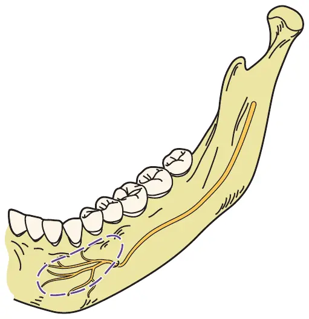

نسخه استخراجشده؛ ترجمه یا تأیید علمی انجام نشده است. وضعیت: captured
عفونت حتی بدون بیماری زمینهای هم رخ میدهد: در محل جراحی، یا در اندامهای دوردست از راه خون. این یونیت به دو سناریوی پیشگیری میپردازد: پیشگیری از عفونت زخم پس از جراحی، و پیشگیری از عفونت متاستاتیک.

و اول یک هشدار مقدماتی: اگرچه آنتیبیوتیکها مکملهای مؤثری برای عفونتهای مستقر هستند، استفاده از آنها در پیشگیری از عفونتها (یعنی تجویز پروفیلاکتیک) بحثبرانگیز و کمتر مبتنی بر شواهد است.
و حالا اعداد:
ولی بیدرنگ یک هشدار: درمانگر باید دادهها را با احتیاط تفسیر کند. و سه دلیل برای این احتیاط وجود دارد.
و نتیجه: فایدهی تجویز روتین آنتیبیوتیک پیش از هر عمل جراحی دهان — یعنی کاهش بروزِ از پیش پایینِ عفونتهای خفیف محل جراحی — نمیتواند سه هزینه را توجیه کند: افزایش خطر واکنشهای نامطلوب به آنتیبیوتیک، افزایش خطر ترویج باکتریهای مقاوم، و بار مالی بر بیمار و نظام سلامت.
پس آنتیبیوتیک پیش از عمل تنها برای شرایط منتخب توصیه میشود — و این شرایط دو مورد است: اعمال جراحی طولانی، و بیماران با دفاع میزبان مختل.